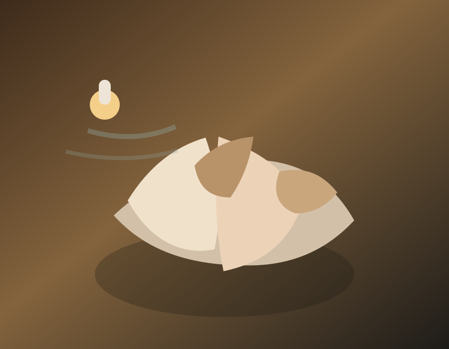

Suaviza
Relaja la musculatura en profundidad.

Un tratamiento sensorial inspirado en la calma del océano. Las conchas marinas calientes se deslizan suavemente sobre el cuerpo, recreando el ritmo natural de las olas mientras liberan tensiones y relajan la musculatura.
Acompañado de aceites de inspiración marina, este ritual envuelve los sentidos y transporta a un estado de serenidad profunda.
Relaja la musculatura en profundidad.
Invita a un estado de quietud interior.
Estimula los sentidos con una calidez delicada.
Disuelve tensión física y mental.
Estamos aquí para ayudarte